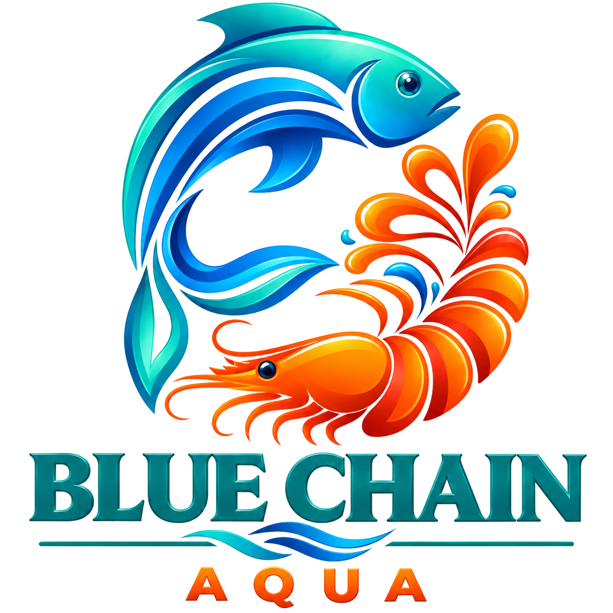
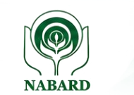
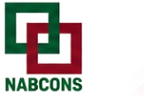
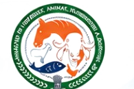
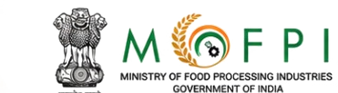
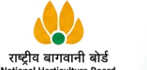
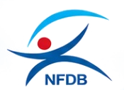
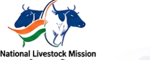
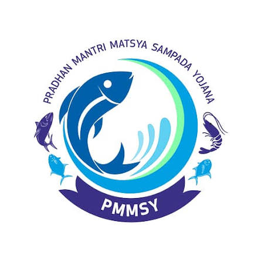

Access official resources, schemes, subsidies and guidelines from leading Government organizations that support fisheries, aquaculture, agriculture and allied sectors.

Agriculture, rural development & project finance
Official website · nabard.orgOfficial website ↗
Consultancy & project development
Official website · nabcons.comOfficial website ↗
Fisheries policy, schemes & development
Official Department of Fisheries website · dof.gov.inOfficial website ↗
Food processing & value addition
Official website · mofpi.gov.inOfficial website ↗
Horticulture development & infrastructure
Official website · nhb.gov.inOfficial website ↗
Fisheries & aquaculture development
NFDB logo use is subject to prior permission from NFDB.Official website ↗
Centrally sponsored livestock development scheme
Official Government page · DAHD · National Livestock MissionOfficial website ↗
Digital platform for fisheries & aquaculture stakeholders
Official Department of Fisheries portal · nfdp.dof.gov.inVisit Official Website ↗